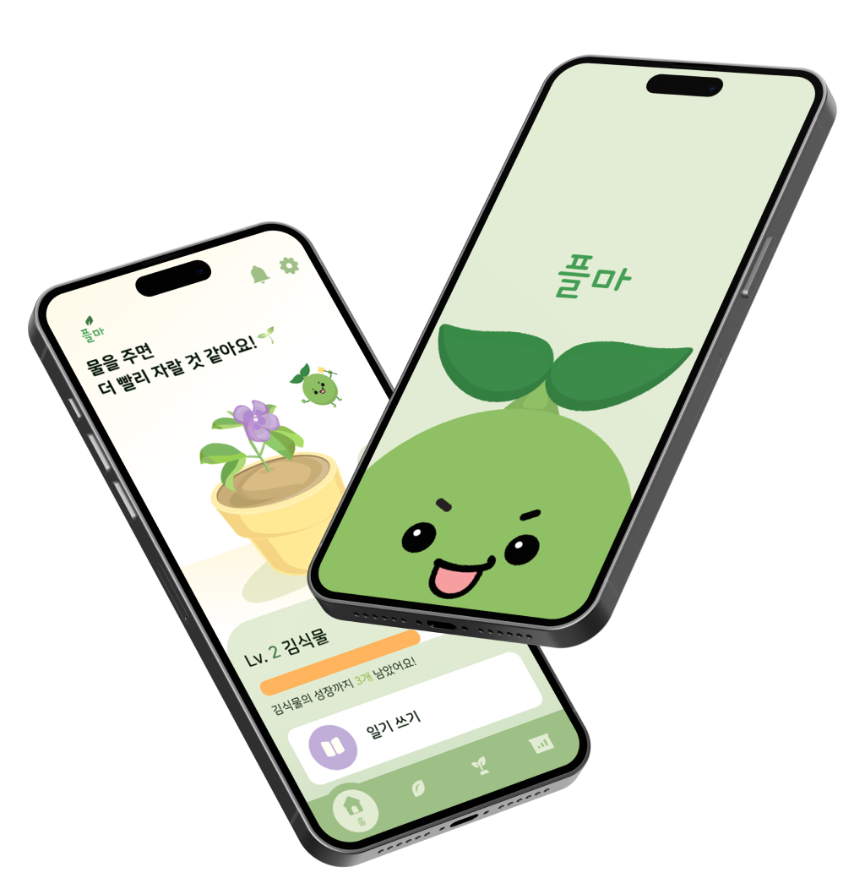
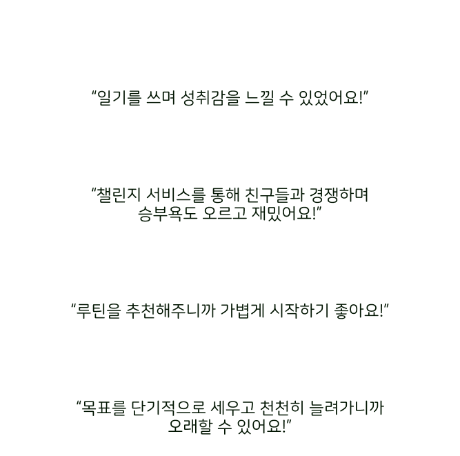
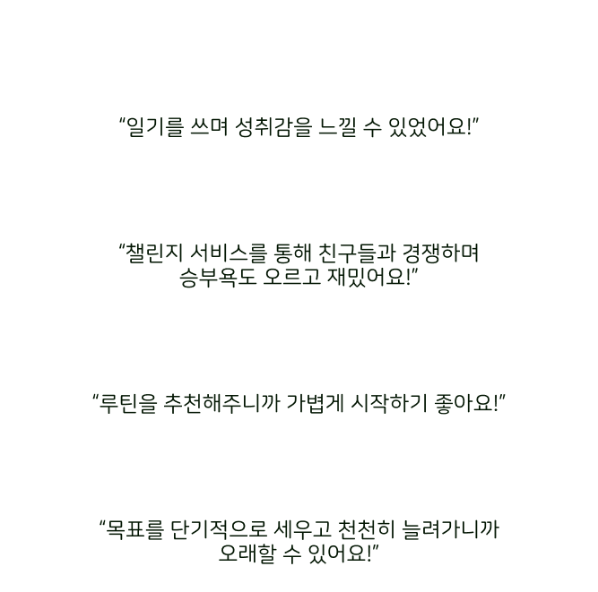

갓생으로 살기 위해 노력이
강박과 스트레스 유발로 이어져 힘드신가요?
10대~20대 서비스 이용자, 잠재 고객들에게 질문해봤습니다.


사용자가 습관형성을 재밌고 쉽게 할 수 있도록 하기 위해!
유저들의 앱 서비스 사용 후기를 작성했습니다.
 

식물에게 도움을 주는 형식의 리스트
특정 배지를 증정
작성할 수 있는 일기
나무스퀘어라운드를 사용하였습니다.
Home
Routine
Garden
Growth
힘들고 지치기만한 습관 형성
플마와 함께 재밌게 만들어 보아요!
서연우
Planner
010-9206-4960
권규린
Designer
010-2833-8320
박소정
Designer
010-7922-6868
이경진
Designer
010-6890-1436
정해린
Designer
010-4609-0545
임승현
Programer
010-2842-6429
식물 키우기로 계획 쉽고 재밌게 실천하자!